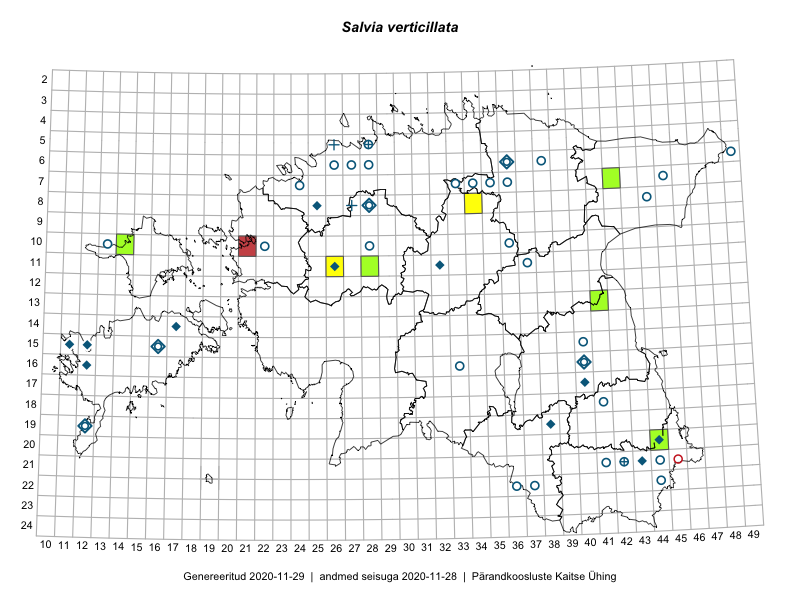

Salvia verticillata
Uuendatud: 2016-12-02
Kaardile koondatud taksonid: Salvia verticillata L.

Kaart põhineb 7 kirjel, neist vaatlusi 3 ja eksemplare 4. Taksonit on leitud 5 ruudust.
Viited andmebaasikirjetele
- Peedu Saar: 2015-08-11: 13-41: ala
- Mari Metsoja, Jaak-Albert Metsoja: 2015-07-23: 07-42: ala
- Hanna-Eliisa Luts, Tõnu Ploompuu: 2015-07-28: 11-26: ala
- Peedu Saar: 2015-08-11: 13-41: GPS punkt
- Ott Luuk: 2013-06-19: 11-28: GPS punkt
- Ott Luuk: 2013-06-19: 11-28: GPS punkt
- Peedu Saar, Tarmo Niitla: 2016-08-18: 20-44: GPS punkt